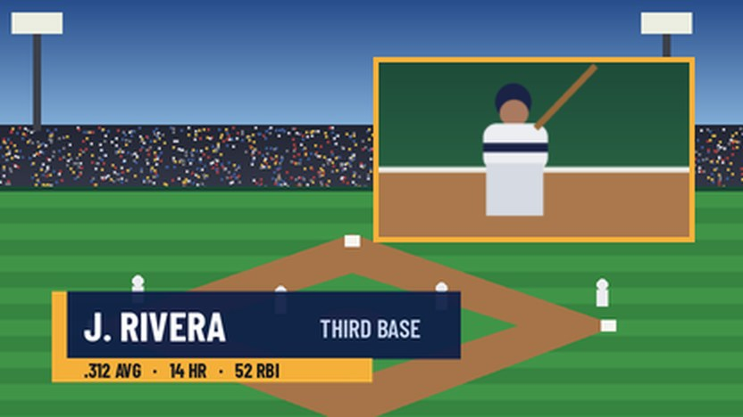

RTVF 065E Technical Directing · Control Room A · Hofstra University
The Acuity Playbook
Created by Harold Garcia · Instructor, RTVF 065E Technical Directing · Lawrence Herbert School of Communication, Hofstra University
Your go-to guide for the Ross Acuity production switcher. Keyers, effects memories and attributes, custom controls, motion graphics, and a full replay package, built step by step. Every chapter has a narrated demonstration, plain-language steps you can follow at the panel, and the page where the full procedure lives in Ross Video's Operation Manual.
ListenWelcome · 0:38
Why this playbook existsFrom your instructor
The first time you sit at a switcher, it looks like a foreign object: hundreds of buttons and lights. It's really an overblown remote control, and it lives in two worlds: the panel under your hands, and the touchscreen that talks to it.
I built this playbook from my years at the switcher, from CBS Sports control rooms to Citi Field, as a better way to learn it. A manual is a reference, not a teacher. So every chapter gives you four ways in. You see it in a short demonstration. You hear it in a briefing. You do it at the panel with a checklist. And you find it on the exact page of Ross's manual, the same habit professionals rely on during a live show.
In this room we solve problems together, and "I don't know" or "I'm confused" is always a fair thing to say. You and your families have worked hard for you to be here. This guide is part of my commitment to give you my best.
Harold GarciaTechnical Director · Instructor, RTVF 065E Technical Directing
Tap a part of the panel to open its chapterMap of the switcher
Simplified drawing. Your panel's exact layout, source names, and number of keyers may differ. Labels match the button names in Ross Video's documentation.
Three kinds of instructionHow to read this guide
A button on the panel
SELAUTO TRANSCAM 1CAM 21
Physical buttons look like this. In this guide's drawings, a lit color shows a state: amber is selected, red is on air, green is on preset, blue is a recorded custom control.
A path on the touchscreen
HOMECustom ControlsStart Recording
Press each touchscreen button in order. A dashed oval like Bank is one of the three knobs beside the menu.
Where it lives in the manual
Ops Manual v9.2 · p. 90
Page numbers point to the printed Acuity Operation Manual, version 9.2 (Ross part number 4820DR-110). A second chip links to Ross's current online help.
Do these once, before Chapter 01Before you start
Check which software the switcher runs
On the touchscreen, press HOMEStatusVersion Info.
Read the control panel and frame software versions on the screen.
WhyMenus and labels change between software versions. The steps in this guide follow Ross's current online help (version 15.0). If something on your screen looks different, the manual for your version is the final word.
Format it FAT32 and label it with your name. You'll use it to save your switcher setup at the end of every class (Chapter 08) and to carry animations into the Media-Store (Chapter 06). Not both at once: for a Media-Store transfer, the animation files must be the only files on the drive. Move your saved setup off the drive first, or carry a second drive for media.
Nine chapters · eight narrated demonstrationsThe series
The Acuity is two worlds: the panel under your hands, and the touchscreen menu that talks to it. Learn the rows, the modules, and how to move around the menu, and every later chapter becomes a matter of knowing which button lives where.
Ops Manual v9.2 · Acuity Control Panel Overview · pp. 14–21 Menu System · pp. 27–31 Switcher Basics · pp. 34–37
Records and runs custom controls, the Acuity's macros. One row can reach many banks.
p. 14
Source buses
The bottom row is the Preset bus (the next shot). Above it is the Program or background bus (on air now). The upper row selects sources for a keyer or an aux bus.
p. 14
Keyers module
Picks a key type, adds modifiers like a box or border, and takes keys on and off by themselves.
p. 15
Effects Memory module one per row
Stores and recalls memories and sets rates for the Mix Effects bank that row is assigned to.
p. 16
Transition module
Chooses what's in the next transition and how it looks, then runs it with CUT, AUTO TRANS or the fader.
p. 18
Global Memory module
Stores and recalls memories on one or several Mix Effects banks at once. Its keypad enters numbers, rates, clips, and custom controls.
p. 15
Menu Keypad and Positioner
Drive the touchscreen menu from the panel, and move wipes, patterns, and flying keys.
p. 17
Preview and Preview Overlay
Choose what the Preview monitor shows, and add guides such as safe title.
p. 18
Fade to Black
Takes the whole switcher output to black and back.
p. 15
pp. 19–21Assign the rows
Assign a panel row to a Mix Effects bank
Press the SEL button on the row you want to assign. (On a Double-Down panel, press the mnemonic button at the right end of the row.)
Press Assign ME on the touchscreen.
Press the button for the row you're assigning: Row X for a physical row.
Press the Mix Effects bank you want, ME X. The row's Keyers, Effects Memory, and Transition modules follow it.
FasterPress and hold SEL, then press a source button on the background or key bus to pick the bank, keyer, or aux bus for that row.
Ops Manual v9.2 · p. 19 · Assigning a Panel Row to an ME
Point the key bus at a different keyer
Press SEL on the row.
Press Select Key/Util Bus.
Press the keyer you want, KEY X. Toggle Lock Key Row on to keep it there.
Ops Manual v9.2 · p. 20 · Assigning a Key bus to a Keyer or Utility Bus
pp. 27–31Move around the touchscreen
HOME always jumps to the Main Menu. Every menu tree starts there.
UP ONE climbs back one level. Back and Forward work like a web browser.
The page count sits next to the menu name: Main Menu (1-2) means page 1 of 2. Press More for the next page.
Buttons with a down-arrow open a sub-menu.
Turn a knob by circling it on the screen or by tapping just left or right of it. Double-tap a knob to return it to its default. Tap a knob with the edit icon to type a number on a keypad.
The menu auto-follows: press SEL on a keyer and the key menu opens by itself.
The lock button holds the current menu so auto-follow can't move it. Copy Up, Copy Down, and Swap move menus between the top and bottom regions.
Locked panel?Opening the Installation menu puts the switcher in a safe, locked mode: no source selection, transitions, memories, or custom controls. Press Swap to move the Installation menu to the top region and return to normal operation.
Ops Manual v9.2 · p. 27 · Using the Menu System p. 28 · Menu Number Shortcuts
p. 36The reset, and when never to use it
Reset Mix Effects banks to their default state
On the Global Memory module, press both ALL buttons at the same time to reset every bank.
To reset one bank (1 to 4), press both of its ME X buttons together. For banks 5 to 8, hold +4 first.
To reset only the bank on one row, press RECALL and STORE together on that row's Effects Memory module.
After a reset: the first source button (black by default) is selected on every bus, all keys are off air, Background and Dissolve are selected for the next transition, the Mix Effects rate is 15 frames, and the key rate is 8 frames.
Off air onlyA reset changes the program output instantly. Never use it during a live show.
Light the elements that will change. Hold the first and press the others to select several.
2 · Look
How does it change?
DISSWIPEDVESEQ
Dissolve, a pattern wipe, or a digital video effects move.
3 · Execute
What makes it happen?
CUTAUTO TRANSFader
Instant, at the set rate, or at the speed of your hand.
The Transition module asks the three questions left to right. The Preview monitor shows the answer before you commit.
p. 42The basic transition
Perform a transition
On the Transition module, select the elements to include: BKGD and any KEY X. Hold the first button and press the others to select several.
Select your sources: the next shot on the Preset bus, and any key sources on the key bus.
Select the type: DISS, WIPE, or DVE. Wipes and digital video effects need a pattern or sequence (below).
If a video server clip on the incoming source should play with the transition, light ROLL CLIP (Chapter 07).
Check the Preview monitor.
Go: CUT for instant, AUTO TRANS for the set rate, or move the fader. Grab the fader during an auto transition and it takes over.
TipSome switchers are set so that a double-press of BKGD selects the background plus every key that's on air (the BKGD Double Press personality option).
Ops Manual v9.2 · p. 42 · To Perform a Transition Online help
pp. 43–44Rates are counted in frames
Set the Mix Effects, key, and fade rates
Mix Effects rate (background transitions): press ME RATE on the row's Effects Memory module, type the number of frames, press ENTER.
Key rate (a key's own transitions): press KEY RATE on the Effects Memory module, or hold KEY RATE on the Global Memory module and press ME X. Type the frames and press ENTER.
Fade to black rate: press and hold FADE RATE on the Global Memory module, type the frames, press ENTER.
The defaults after a reset are 15 frames for the Mix Effects rate and 8 frames for keys. In a 59.94 interlaced format, 15 frames is about half a second.
Press Direction to set Forward or Reverse, and Flip Flop to make the next wipe run back the other way.
Press Modify Pattern to shape it:
X / Y: position, with the knobs or the positioner.
Border/Soft: border size (0 is off) and edge softness.
Aspect, H-Mult or V-Mult, and Rotation for more character.
Run it with AUTO TRANS or the fader.
User wipesEight user wipe buttons can hold your favorite patterns: HOMEMoreEffectsPattern SelectionModify PatternPattern OptionsUser Wipes.
Ops Manual v9.2 · p. 44 · To Set Up a Wipe Online help
Set up a digital video effects transition
Press DVE.
Pick the effect. You can also type its number on the keypad and press ENTER if the Keypad DVE Entry personality option allows it.
Set Direction and Flip Flop.
Run it with AUTO TRANS or the fader.
Watch outIf there aren't enough digital video effects channels free, the switcher does a dissolve instead. These transitions also start one frame late.
Ops Manual v9.2 · p. 46 · To Set Up a DVE Transition Online help
pp. 46–48Professional transition tools
Preset Background: a quick transition to a different background
Press and hold PST BKGD.
Press a source on the Preset bus.
Select DISS or WIPE.
Perform the transition.
The switcher remembers the next transition you had set up, so you can return to your plan afterward.
Watch outPreset Background selects the background and every key that's on air for the transition. A lower third that's up will go off with it. Choose black on the Preset bus and it becomes a quick transition to black.
Ops Manual v9.2 · pp. 46–47 · Preset Background Online help
WhiteFlash: dissolve through a flash of color
Double-press DISS. It flashes to show WhiteFlash is selected.
Press Color and choose the flash color.
Set ME Rate to Yes to use the Mix Effects rate, or No to set your own Timing Settings: Onset, Hold, and Fade, in frames.
Ops Manual v9.2 · p. 47 · WhiteFlash
Transition Preview: rehearse it on Preview first
Set up the transition.
Press and hold DISS, WIPE, or DVE. The Preview output matches Program.
Run the transition with the button still held. It plays on Preview only, then Preview returns to normal.
Ops Manual v9.2 · p. 47 · Transition Preview
Transition Limit: stop halfway, then go back
To set the stop point: press TRANS LIMIT, move the fader to where the transition should stop, press TRANS LIMIT again, then return the fader to where it started.
To use it: press TRANS LIMIT, then AUTO TRANS. The transition stops at your point.
Press AUTO TRANS again to reverse back to the start.
Watch outPushing the fader all the way to the end while setting the limit spoils the setting. Limits work only with AUTO TRANS, not the fader, cuts, or key-only transitions.
Ops Manual v9.2 · p. 48 · Transition Limits
Fade to black
On the Fade to Black module, press FADE to fade at the fade rate, or CUT to cut to black.
While you're at black, the on-air source buttons flash.
Press FADE or CUT again to come back.
Ops Manual v9.2 · p. 46 · To Fade to Black Online help
At the panel
03Keyers
Lower thirds, boxes, and green screen
A key cuts a hole in the picture and fills it with something else. The alpha (also called the key signal) cuts the hole. The fill fills it. Every key type is just a different way of getting an alpha.
Ops Manual v9.2 · Keying · pp. 50–56 Key Modifiers · pp. 57–70 Keyers Module · p. 15
White in the alpha means "show the fill here." Black means "keep the background." Gray means partly see-through. Hold SHOW ALPHA to see any key's alpha on Preview.
pp. 50–55Pick the right key type
Key type
Where the alpha comes from
Use it for
Manual
AUTO SELECT
A separate alpha signal paired with the fill once, in setup.
Graphics from a character generator, a still store, or the Media-Store. The professional default for graphics.
p. 50
SELF KEY
The brightness of the source itself.
White text on black from a simple source.
p. 50
CHROMA KEY
A color, usually green or blue, that the keyer removes.
Talent in front of a green screen.
pp. 51–55
PST PATT
A wipe pattern's shape.
A picture-in-picture box or shaped window. It flies on its own with the digital video effects option.
p. 55
pp. 50–55Set up each key type
Auto Select key: a graphic with its own alpha
On the Keyers module, press SEL for the keyer you want.
Select the graphic on the key bus.
Press AUTO SELECT. KEY MEM lights to show the stored settings for that source are in use.
To adjust it, press Clip/Gain, toggle Key Mem off, and turn Clip and Gain.
Optional: press Trans Rate for this key's own rate, or toggle Transparency on and turn Transp. from 0% (solid) to 100% (invisible).
Save itTo store new clip and gain values with that source, hold AUTO SELECT and press KEY MEM. Every Mix Effects bank uses those settings whenever that source is keyed.
Ops Manual v9.2 · p. 50 · To Set Up an Auto Select Key Online help
Pair a fill with its alpha (done once, in setup)
Auto Select only works after the fill and its alpha have been paired. Usually your instructor or engineer does this once per graphics source.
Press SEL for the keyer and select the source on the key bus.
Press SELF KEY.
Press Clip/Gain. Clip sets the brightness where the key starts to cut. Gain sets how hard or soft the edge is.
Press Make Key Linear any time to put clip and gain back to defaults.
Backwards?If black letters should cut the hole instead of white ones, press KEY INV to flip the alpha.
Ops Manual v9.2 · p. 50 · To Set Up a Self Key Online help
Chroma key (basic mode): green screen
Press SEL for the keyer and select the camera on the key bus.
Press CHROMA KEY. Turn Key Mode to Basic.
Turn Color to the backing color to remove.
Press Initialize Key. This resets every chroma setting to its default, so do it first.
Press Background and turn Gain. Lower removes more of the color.
Press Foreground: Clip adds or removes low-saturation colors, Hue fine-tunes the base color, Reject sets how many neighboring hues are included.
Press Spill Suppress and turn Range up to remove green cast from hair and edges.
Press Edge Softness and adjust Softness and Width.
Person looks see-through, with white or gray patches: adjust Foreground Clip. The Color Map shows which areas the keyer treats as background and which as foreground.
See-through because of green spill: lower Foreground Reject.
Green not fully removed: lower Background Gain while watching SHOW ALPHA.
Colors shifting on the person: lower Spill Suppress Range.
Save itHold CHROMA KEY and press KEY MEM to store the settings with that camera.
Ops Manual v9.2 · pp. 51–52 · Chroma Key · Fine Tuning Tips Online help
Preset pattern key: a shaped window
Press SEL for the keyer and select the source on the key bus.
Press PST PATT.
Press Pattern Selection and choose a pattern, such as a box.
Press UP ONE. Move it with the positioner; size it by twisting the positioner or with Size. Soften the edge with Softness.
With the digital video effects option installed, a preset pattern key flies automatically. Turn fly key off if you want it fixed.
Ops Manual v9.2 · p. 55 · To Set Up a Preset Pattern Key Online help
Keyers module · p. 15Check a key before it airs
HoldKEY PV to show the selected key on Preview. Double-press to latch it; double-press again to release.
HoldSHOW ALPHA to see the key's black-and-white alpha. Double-press to lock it on.
Press KEY INV to flip the alpha if the wrong part is cutting the hole.
p. 42 · p. 44Take a key on and off by itself
Independent key transitions
Each keyer has its own CUT and AUTO TRANS buttons on the Keyers module.
Press CUT to put the key on or take it off instantly.
Press AUTO TRANS to dissolve it on or off at that key's own rate (8 frames by default).
Watch outIf that key is also lit in the Next Transition area, pressing its own CUT or AUTO TRANS takes it off air, even if it wasn't on, and removes it from the next transition. It will not put the key on. Independent key transitions are cuts and dissolves only.
To take a key on with the background, light BKGD and KEY X together on the Transition module and press AUTO TRANS. That transition runs at the Mix Effects rate.
Ops Manual v9.2 · p. 42 · Independent Key Transitions Online help
pp. 57–70Key modifiers: boxes, borders, masks

A two-key look: a picture-in-picture box with a border on Key 2, and a lower third on Key 1.
Fly a key into a box (2D digital video effects)
Set up the key type and source first. A PST PATT key is ready to fly.
Select the keyer and press 2D DVE.
Press Position: turn X Location for left and right, Y Location for up and down, or use the positioner.
Press Aspect/Size and turn Size.
Press More for Crop Horizontal and Crop Vertical if you need to trim the edges.
ChannelsSelf, auto select, and chroma keys use two digital video effects channels to fly, one for the fill and one for the alpha. If you run out, simplify the look.
Ops Manual v9.2 · p. 57 · To Set Up a 2D DVE Fly Key Online help
Add a border to a flying key
In the key's digital video effects menus, press DVE MenuBorder.
Press Size and set the border thickness. Set size first.
Adjust Softness.
Press Color and pick the border color.
Ops Manual v9.2 · p. 59 · To Apply a DVE Border Online help
Hide part of a key with a box mask
Select the keyer and press MASK, then Box Mask.
Press Position/Size to place the mask; press Top/Left and Bottom/Right to set its edges.
Toggle Invert on to reverse the mask: what was hidden shows, and what showed is hidden. Toggle Force on to force the masked area on screen.
Ops Manual v9.2 · p. 69 · To Set Up a Box Mask Online help
pp. 47–48Which key is on top?
Keys stack in priority order: Key 1 is the bottom layer and the highest key is on top. Put the graphic that must cover everything, like a stinger, on the highest keyer.
Change the order right now
Hold KEY PRIOR on the Transition module.
Press SEL for the key that should go on top. Press another SEL to put that one above it.
Release KEY PRIOR.
Watch outThis changes the order on air immediately. To change it as a smooth transition instead, use a Key Priority transition (p. 48).
Ops Manual v9.2 · p. 48 · To Manually Set the Current Key Priority Online help
At the panel
04Effects memory
Store a look. Bring it back.
An effects memory is a snapshot of a whole look on a Mix Effects bank: sources, keys and their settings, box positions, wipe choices, and rates. Attributes decide which parts of that snapshot a recall brings back. Professionals build the show in memories before it airs.
Ops Manual v9.2 · Memory Functions · pp. 71–75 Global Memory module · p. 15 Memory module · p. 16
BANKTwo digits · 00–99Hold BANK and key in the bank.
REGISTEROne digit · 0–9Press the register number.
MEMORY NUMBERMemory012Bank 01, register 2. That gives 1,000 memory numbers for each Mix Effects bank.
How memories are numbered. Ross's own example: Memory039 is register 9 in bank 03.
p. 73 · set these before you storeAttributes: choose what a recall brings back
Set the general memory attributes
Press ATTRIB on the row's Effects Memory module, or press HOMEAttributesME Attributes.
Press General and turn ME to the bank.
Choose the video that comes back:
BKGD/PGM: the source on the Program bus.
PST: the source on the Preset bus.
Key X Xpt: each keyer's source. Key X State: whether the key is on air. Key X Type: its key type. Key settings such as clip and gain always come back.
Chroma Key: the chroma settings. Turn it off in a virtual set so you can change shots without disturbing the key.
Choose how the Transition module comes back:
Next Trans Buttons: which elements are lit for the next transition.
Transition Area: the transition type and its settings.
Run Auto Trans: runs an auto transition right after the recall. Set the transition up before you store.
Other attribute pages, under the same menu:
Aux Bus: which aux buses the memory also recalls.
Custom Control: turn Bank and Macro to a custom control, then press Auto Run Custom Control. That macro runs every time the memory is recalled.
Video MediaStore and Audio MediaStore: which Media-Store channels the memory reloads. These only take effect when the Recall GS MediaStore or Recall ME-Store personality options are set to Attributes.
OverrideHold ATTRIB while you recall a memory to use the default attributes instead of the ones stored with it, for that one recall.
On the Store side, press the ME X button for the bank, or ALL. To add banks, hold the first ME X and press the others. Hold +4 for banks 5 to 8.
Hold BANK and key in the two-digit bank number. A lit number button means that register already holds a memory; a gray one is empty.
Press the register number, 0 to 9.
Press ENTER. You can name the memory now or later.
ShortcutPress STORE on a row's Effects Memory module to store only to the bank that row is assigned to.
Ops Manual v9.2 · p. 71 · To Store a Memory Online help
Recall a memory
On the Recall side, press the ME X button for the bank, or ALL.
Hold BANK and key in the bank number. Skip this if that bank is already selected.
Press the register number. The recall happens on that press; no ENTER needed.
LiveRecalling onto the bank that's on air changes the program output instantly. Rehearse recalls off air first.
UNDO takes back the last recall. It goes out after about ten more button presses.
KEYS ONLY recalls only the keyer selections and leaves the Program and Preset buses alone.
Bus Hold: hold a source button while you recall, and that bus keeps the source you're holding. The stored memory doesn't change.
Ops Manual v9.2 · p. 72 · To Recall a Memory Online help
Pro pattern: recall to Preview, then take it
A recall that changes the air instantly is risky. Build looks so a recall only sets up the next transition, and you take it to air with a normal transition.
Build the look so the background you want is on the Preset bus and the keys you want are lit in the Next Transition area.
In General attributes, turn BKGD/PGM and each Key X State off. Turn PST, the Key X Xpt sources, and Next Trans Buttons on.
Store the memory.
On the show: recall it, check Preview, then press AUTO TRANS.
LimitKeyer settings always come back with a recall, and Key X Xpt changes a keyer's source at once. If one of those keys is already on air, the change shows on air. The pattern is clean when the look's keys are off air at the moment you recall.
VerifyThis pattern is built from the documented attributes. Rehearse it twice off air and confirm the program output does not change on the recall before you trust it on a show.
p. 75Glide between looks
Effects dissolve
Store both memories. Each one carries its own effects rate.
Recall the first memory.
Turn on EFF DISS.
Recall the second memory. Positions, sizes, and key levels glide to it at the effects rate stored in the second memory.
To set an effects rate: press EFF RATE, type the frames, press ENTER. Sources, key priority, and pattern choices don't glide; they switch at the start and then the move happens.
Ops Manual v9.2 · p. 75 · Effects Dissolve Online help
pp. 72–75Keep your memories safe
Name and lock a memory
Press HOMEAttributesMemories Setup.
Turn ME to the bank and Memory to the register.
To name it: press Rename, then Name, type the name, and press Accept New Name.
To lock it: press Lock Memory so it reads Yes. Lock Bank locks the whole bank.
NoteA full recall from a saved setup (Chapter 08) can still overwrite locked memories.
Ops Manual v9.2 · pp. 72–73 · Naming and Locking Memories Online help · Lock
Ops Manual v9.2 · p. 75 · Copying and Swapping Memories
Delete a memory
Off air, reset the bank (both ME X buttons, or RECALL + STORE on its row).
Within 10 seconds, store to the register you want to clear. Its number button turns gray.
Ops Manual v9.2 · p. 72 · To Delete a Memory
At the panel
05Custom controls
One press does the work of twenty
A custom control is Ross's name for a macro: a recording of button presses and special events that plays back with one press. The switcher holds up to 2,304 of them, organized in banks.
Ops Manual v9.2 · Custom Controls · pp. 87–111 Custom Control Bus · p. 14
Fader moves are not recorded. Use CUT or AUTO TRANS inside a macro.
Events run as fast as the switcher can go. It does not wait for a transition or a memory recall to finish. Insert a pause after each one.
Buttons record the press, not the state. A button that toggles something will toggle it again on playback. When you need a key definitely on or definitely off, use the Keys Cut or Keys Trans special events.
Turn on Offline Mode so the switcher does not carry out each event while you record.
A reset (both ALL buttons) belongs last in a macro, or store the reset state in a memory and recall that memory instead.
Sources are recorded by name, not by button position, so a macro still works if the bus map changes, as long as the source exists.
Ops Manual v9.2 · p. 87 · Working With Custom Controls Online help
p. 90Record
Record a custom control from the menu
Press HOMECustom Controls.
Turn Bank to the bank and Button to the custom control button you want to record to.
Optional: toggle Offline Mode on.
Press Start Recording. The custom control button flashes and the menu shows CC RECORDING.
Press the panel buttons in order. For special events, press Insert Event (below).
Press Finish Recording. The button stops flashing.
Grayed out?Another panel has the custom control menu open. HOMESetupMoreExclusive Panel Menu StatusForce CC Menu Change takes it back and cancels that panel's recording.
Ops Manual v9.2 · p. 90 · To Record a Custom Control Online help
Record without the menu
Hold the RECORD shortcut button and press the custom control button to record to. Both flash red.
Press the panel buttons in order.
Press the custom control button again to save, or press RECORD to cancel.
Shortcut buttons such as Record, Pause, Bank, Delete, Run, and Stop are assigned in HOMESetupInstallationMoreCustom Controls. On Double-Down panels they sit at the right end of the custom control row.
Ops Manual v9.2 · pp. 107–108 · Custom Control Shortcuts Online help
pp. 91–102 · Insert EventPauses, holds, and special events
Add a pause or a hold
Pause (a timer): while recording, press Insert EventSpecial and choose Pause CC. Or hold the PAUSE shortcut button and pick a length from the custom control row.
Hold (waits for you): choose Hold CC. The macro stops there and its button shows Held until you press the button again, or a trigger arrives from a general purpose interface (a contact closure from other equipment).
Variable pause (one setting changes many macros): choose V Pause CC and type an equation of variables. Set the variables at HOMECustom ControlsMoreSet Variables with Frames and Seconds.
Put a key definitely on or definitely off. Also Trans Type, Keys Include, Preset Bkgd, Roll Clip.
p. 102
Memory Recall
Insert EventSpecial
Recall a memory on chosen banks. Add a pause after it.
p. 97
Set Xpt
Insert EventSpecial
Select a source on a bank, aux bus, or AuxKey.
p. 101
Play CC · Stop Specific CC
Insert EventSpecial
Start or stop another custom control.
p. 94
Run Sequence
Insert EventSpecial
Run a digital video effects sequence (pre-loaded).
p. 101
VTR events
Insert EventVTR
Cue, play, pause, recue, or stop a clip on a video server.
p. 102
DVE events
Insert EventDVE
Recall, play, or rewind a digital video effects move.
p. 96
CG events
Insert EventCG
Take, load, or clear pages on a character generator.
p. 95
RossTalk
Insert EventMoreRossTalk
Send commands to Ross graphics systems, such as Take or Next.
p. 98
GPO / Tally
Insert EventMoreMoreGPO/Tally
Fire a contact closure or tally.
p. 96
p. 103 · p. 15Run and stop
Press the custom control button on the custom control bus, an aux panel, or the soft shot box (HOMEMoreEffectsMoreCC Shot Box).
From the Global Memory module: press RECALL CLIP/CC, key in the two-digit bank and press ENTER, key in the two-digit custom control and press ENTER, then press RUN CC. It turns red while running. (The CC Global Recall personality option sets whether this button recalls clips or custom controls.)
Recall a memory set to auto-run it (Chapter 04), or press a panel button it's attached to (below).
Stop: press its button again. Or hold the STOP shortcut and press the custom control; double-press STOP to stop all of them. STOP cannot stop a macro that is at a hold.
Press HOMECustom Controls and select the macro with Bank and Button.
Press Edit. Turn Event to the step.
Use Modify Event, Insert Event (adds before the selected step), or Delete Event. Event Up and Event Down reorder. Only some events can be modified; if one can't, delete it and insert a new one in its place.
Test with Run Single Event or Run From Here.
TipMoreVisualize draws the macro's logic so you can check a long one at a glance.
Ops Manual v9.2 · pp. 104–105 · Editing Custom Controls Online help
Name, copy, and delete
Name:HOMECustom Controls, select it, then Modify NameName. Type it, press Acuity Mnemonic, choose Font and Color, and press Accept New Name.
Copy, move, or swap:HOMECustom ControlsCopy/Move Macros, set Source and Destination, then press Copy, Move, or Swap.
Delete: select it and press Delete MacroConfirm. Or hold the DELETE shortcut, press the macro's button, and press it again to confirm.
Ops Manual v9.2 · pp. 103, 106
pp. 105–107Make a macro fire by itself
Attach a macro to any panel button
Press HOMECustom ControlsMoreAttach Macros.
Press the panel button you want.
Select the macro with Bank and Macro.
Turn Attach Type: Post-Attach runs the button's normal action, then the macro. Pre-Attach runs the macro first. Replace runs only the macro.
Press Attach.
Must be onThe CC/Macro Attachments personality option must be on. The ATTACH shortcut button toggles it.
Ops Manual v9.2 · p. 106 · Attaching Custom Controls to Panel Buttons Online help
Run a macro when a source goes on air
Press HOMESetupInstallationSource ConfigurationMoreMoreAttach CCsOn Air CC.
Turn Source to the input and Cust Ctrl to the macro.
Choose Always Active, or Follow Roll Clip to run only when Roll Clip is lit.
Set Preroll: the switcher starts the macro, waits that long, then transitions.
Off Air CC works the same way with a postroll, and runs when the source leaves the air.
Ops Manual v9.2 · p. 105 · On-Air/Off-Air Run Custom Control Online help
Banks and logic
Banks: set up at HOMESetupInstallationMoreCustom ControlsSetup Banks. Name them at Modify Bank Name. Hold the BANK shortcut and press a button to switch banks.
Logic: while recording, Insert EventMoreMoreLogic adds If, Else If, Else, and End If. A condition can test a source, a key's state, or a custom control variable. Plan the logic on paper first and check it with Visualize.
Ops Manual v9.2 · p. 88 · Custom Control Banks p. 110 · Logical Expressions
At the panel
06Motion graphics
From your graphics software to an animated key
The Media-Store is the Acuity's built-in player for stills and animations. You build an animation in your graphics software, bring it in as a numbered image sequence, set it to play when it goes to air, and key it like any graphic.
Ops Manual v9.2 · Media-Store · pp. 79–86 DVE Sequences · pp. 122–124
1 · BUILDGraphics softwareAnimate with transparency. Render a numbered sequence.
2 · CARRYFlash driveFAT32, files at the top level.
3 · COPYCopy From USBFiles land in the switcher's USB folder.
4 · LOADMedia-Store channelFill in one channel, its alpha in the paired channel.
5 · KEYAuto Select keyAuto Play starts it the moment it goes to air.
The motion graphics pipeline. Each step below names the menu and the manual page.
p. 80Step 1 · Build the files right
Rule
What the Media-Store expects
File type
Targa (.tga), .png, or .jpg. Use 32-bit .tga or .png so each frame carries an alpha. A 24-bit file has no alpha.
Frame size
No larger than the screen: 1920 × 1080 in 1080 formats, 1280 × 720 in 720 formats. The size field turns red on the load menu if a file is too big.
Animation
A numbered image sequence, one file per frame.
Numbering
Name, underscore, then a number that starts at 0. Use 2 to 5 digits with leading zeros, the same count on every frame: Replay_0000.png through Replay_0029.png is a 30-frame animation.
Name length
Up to 32 characters, but 12 or fewer display properly. Use letters, numbers, spaces, dashes, underscores, and periods.
Audio
A two-channel .wav at 48 kHz with the same name as the video. Only the Global-Store plays audio.
Replay_0000_0004_0008_0011_0014_0018_0022_0029
The 30-frame stinger used in the demonstrations. Checkerboard means transparent. It starts and ends fully transparent, so keying it on and off is invisible.
Shaped or unshapedGraphics programs export alpha as "straight" or "premultiplied." On the switcher, an unshaped key multiplies the fill by the alpha, and a shaped key expects the fill already multiplied. As a rule of thumb, straight matches unshaped and premultiplied matches shaped. If edges show a dark or bright fringe, switch the setting in the file's Base properties.
p. 83Steps 2–3 · Carry and copy
Copy files from a flash drive
Copy the files to the top level of a blank flash drive formatted FAT32. NTFS will not work, and the files must be the only files on the drive.
Plug the drive into the port on top of the control panel.
Press HOMEMoreEffectsMediaStoreSelect/Manage.
Press Copy From USB. Valid files copy into the switcher's USB folder.
Ops Manual v9.2 · p. 83 · To Transfer Media Files From a USB Online help
pp. 81, 84Step 4 · Load it and set it to play
Load a file into a Media-Store channel
Press the source button for the Media-Store channel, or HOMEMoreEffectsMediaStore.
Turn Location and Channel to pick the channel, such as Global-Store channel 1.
Press Select/Manage and open the USB folder. Parent Directory goes up a level.
Double-tap the file. It appears in the preview window.
Know the media number? Key it in on the memory keypad and press ENTER. Entering 0 clears the channel.
Assign as Default loads this file into the channel every time the switcher starts.
Load large animations before the show. Loading takes time, and the size shown is the full, uncompressed size in memory.
Ops Manual v9.2 · p. 81 · To Load a Media File Online help
Set the animation to play on air
With the file loaded, press On-Air PropertiesVideo.
Turn Auto Play on. The animation starts the moment it goes to air.
Set Looping: on for a background that cycles, off for a one-time stinger.
Optional, Global-Store only: Play Speed, Trim Animation (start and end trim), and Single Frame. Reverse Play runs it backward.
Press Set Properties as Default.
The Base page sets position, shaped or unshaped video, and whether the alpha loads with the file.
Ops Manual v9.2 · p. 84 · To Set Animation Properties Online help
p. 50Step 5 · Key it
Key a Media-Store animation
Make sure the fill channel is paired with an alpha channel in Auto Key Setup (Chapter 03), for example Global-Store 1 with Global-Store 2. When you load a file that has an alpha, the alpha lands in the paired channel.
Press SEL for a keyer. Use the highest keyer if the graphic must cover everything.
Select the fill channel on the key bus.
Press AUTO SELECT.
Take the key on with its CUT button. Auto Play starts the animation.
Ops Manual v9.2 · p. 50 · To Set Up an Auto Select Key
p. 83Grab a frame from video
Capture to a Media-Store
Press HOMEMoreEffectsMediaStoreCapture.
Press Change Directory, choose the folder, and press Select Directory.
Press Source and turn Vid Src to Preview or an aux bus.
Choose Video Capture, Alpha Capture, or both. Set the length with Video Frames. One frame makes a still.
Press More, then Capture To Disk to capture, save, and load in one step.
Save firstCapture To RAM is not saved until you press Save Capture To Disk. Capturing again or loading other media loses it.
Ops Manual v9.2 · p. 83 · To Capture to a Media-Store Online help
pp. 122–124The switcher's own motion: digital video effects sequences
A sequence is a set of keyframes for a flying key: a box that slides in, grows, and settles. Sequences live on digital video effects keys and can run on their own or as a transition.
Build, save, and run a sequence
On a flying key, press DVE MenuSequence.
Position the key where the move starts. Press Duration and turn Frames. Turn Type to Smooth, Spline, or Linear. Press Insert.
Move the key to the next position and press Insert again. Repeat for each keyframe.
To save: Load/Save Sequence, pick a register, Save Sequence, then Rename Sequence.
To run: press SEQ on the Transition module, pick the sequence, then AUTO TRANS or the fader.
Ops Manual v9.2 · pp. 122–123 · DVE Sequences Online help
External graphicsA character generator such as Ross XPression sends a fill and an alpha into the switcher. Key it as an Auto Select key, and trigger its pages from custom controls with the CG or RossTalk events (Chapter 05).
At the panel
07Replay build & assembly
Stinger, hidden cut, replay tag
A professional replay package: an animated stinger covers the screen, the switcher cuts to the replay server underneath it, a replay tag appears, and the stinger clears. The Acuity has no built-in stinger transition (the Transition module's MEDIA button is documented as not used), so you assemble the package from parts you already know.
Ops Manual v9.2 · Roll Clip · p. 49 Custom Controls · pp. 87–111 Media-Store · pp. 79–86
ListenChapter briefing · 0:22
Narrated demonstration · 2:08Includes the hidden cut at one eighth speed
The parts listWhat you need before you record
Part
Where it comes from
Chapter
Replay server on a source button, under switcher control
Set up once in installation (below). Clips can be assigned to clip registers.
07
Stinger animation in Global-Store 1, Auto Play on, Looping off
Your graphics software, loaded into the Media-Store, with its alpha in the paired channel.
06
Replay tag graphic on Key 3
A still with alpha, keyed as Auto Select.
03 · 06
Stinger key on Key 4, the top keyer
Global-Store 1 on the key bus, Auto Select.
03
Roll Clip in Arm mode
The Roll Clip Mode personality option.
07
Measured from the demonstration stingerFind the frame where the cut can hide
Share of the screen fully covered by the stinger, frame by frame. In this 30-frame animation, frames 11 to 16 cover every pixel, so the cut goes at frame 12. Measure your own stinger the same way: step through it and note the frames where nothing of the picture behind shows.
Done once · Setup Manual and online helpPut the replay server under switcher control
This is installation work, usually done by your instructor or engineer. Students should know it exists, because Roll Clip and the clip events depend on it.
Connect and assign the server
Communications:HOMESetupInstallationCom Setup. Pick the port, set Device to VTR (CLIP), press Select Device and choose the server's protocol (for example VDCP). Set Device Preroll to 0 for the replay package, the connection type (RS-422 or Network TCP), and the target machine. Press HOMEConfirm.
Input:HOMESetupInstallationSource ConfigurationInput Type. Turn Input to the server's input and set its type to VTR. Under MoreVTR/VDCP/AMP Xpts, pick the controller, and set the channel in Video Server Setup. Press HOMEConfirm.
Clips (optional):HOMEClipsAssign Clips. Turn Clip to a register, name it, pick the server input with Device, choose the clip, and set in and out points if you need them.
ROLL CLIP on the Transition module ties a server clip on the incoming source to the next transition. The Roll Clip Mode personality option (HOMESetupPersonality) sets how it behaves for every bank:
Arm: the clip plays with the next CUT or AUTO TRANS on that Transition module. You can also double-press the source's button to play it. Use this for the replay package.
Play: pressing ROLL CLIP plays the clip immediately. You take it to air yourself.
Armed Always: Roll Clip is locked on.
PrerollIf the server has a preroll time set and Roll Clip is on, the switcher waits out the preroll before it transitions. For the replay package that delay would push the cut past the frames where the stinger covers the screen, so set the server's Device Preroll to 0.
Assembly · built from documented custom control eventsRecord Replay In
The seven events
Key 4 CUT. The stinger goes to air and Auto Play starts it.
Pause, 12 frames. Wait until the stinger fully covers the screen. Use your own stinger's full-cover frame.
The replay server's source on the Preset bus (the SERVER button in the demonstration).
CUT on the Transition module, with only BKGD lit. The background cut and the clip roll happen behind the stinger.
Key 3 CUT. The replay tag goes on, also hidden by the stinger.
Pause, 18 frames. Wait until the stinger has fully cleared (frame 30 in the demonstration).
Key 4 CUT. The empty stinger key comes off air, ready for next time.
Record it with HOMECustom Controls, Bank, Button, Start Recording, the events above, then Finish Recording. Add each pause with Insert EventSpecialPause CC. Name it REPLAY IN.
Before you recordKeep only BKGD lit in the Next Transition area. If a key is also lit there, pressing that key's own CUT takes it off air and removes it from the next transition. The stinger would never come on.
Roll every timeTo guarantee the clip rolls on every run, add Insert EventSpecialRoll Clip set to Enable just before the CUT event.
Make it bulletproofA key's CUT button flips the key. If a run might start with a key already on, record Insert EventSpecialKeys Cut instead, which sets the key on or off outright.
Record Replay Out: the mirror image
Key 4 CUT: stinger on.
Pause, 12 frames.
A camera on the Preset bus.
CUT.
Key 3 CUT: replay tag off.
Pause, 18 frames.
Key 4 CUT: stinger off.
Optional: add a Insert EventVTR event such as Recue at the end so the server is ready for the next replay.
Measure before you trust itRehearse and trim
Run Replay In twice in a row. Confirm the stinger starts from its first frame each time.
Watch Program at full speed. If you see a flash of the old shot or the server before the stinger covers, move the cut later. If you see it after, move it earlier.
Open Edit, turn Event to the pause, and use Modify Event. If the pause can't be modified, delete it and insert a new one. Test with Run From Here.
Put both macros on the custom control bus (REPLAY IN, REPLAY OUT), or attach Replay In to a panel button (Chapter 05).
At the panel
08Show prep & recovery
Save your work. Recover fast.
Everything you build lives on the switcher until someone overwrites it. Save your whole setup to your own drive, know the tools that layer and copy looks, and know your recovery moves before you need them. When something goes wrong on air: do less, not more.
Ops Manual v9.2 · Switcher Setups · pp. 76–78 Switcher Basics · pp. 34–41
Turn Disk Type to USB. Turn Set Names to the set you want to use.
Press Store, then All. Or press individual items; each one stores as you press it.
A setup holds memories, custom controls, sequences, bus maps, shot box pages, clips, personality settings, and more.
Ops Manual v9.2 · p. 76 · To Store a Switcher Setup Online help
Recall it next class
Press HOMEDiskDestination/Source and turn Disk Type to USB.
Turn Set Names to your set.
Press Recall, then All, or just the items you need.
If the set includes the Media-Store, restart afterward: HOMEMoreSystem ShutdownRestart.
CarefulRecall All overwrites what's on the switcher, including memories someone else locked. Store individual items (Store Individual, Recall Individual) when you share the room.
One drive, not both at onceSetups accept FAT or NTFS drives; Media-Store transfers need FAT32 with the media files alone on the drive. A FAT32 drive works for both, but move your setup off before you copy media, or carry a second drive for media.
Ops Manual v9.2 · p. 77 · To Recall a Switcher Setup
pp. 18, 37–39Check your framing
Safe title and other preview guides
Press SAFE TITLE on the Preview Overlay module to show the safe title guides on Preview. Keep text and graphics inside the inner box.
CENTER adds a center cross, SOURCE ID labels the source, and HIDE OVLY turns every overlay off.
To adjust the guides: HOMEMoreEffectsMoreMorePreview OverlaySafe Title Setup.
Ops Manual v9.2 · p. 18 · Preview Overlay Online help
pp. 34–35Stack banks with re-entry
Re-enter one Mix Effects bank into another
Re-entry uses one bank's whole output as a source on another bank. Build a complex look on Mix Effects 1, then use it as the background or a key on Mix Effects 2 and add more on top.
Build Mix Effects 1 with a background and a key.
Build Mix Effects 2 with a key.
On Mix Effects 2, select ME 1 on the background bus. Mix Effects 1's whole picture is now Mix Effects 2's background.
A bank can't be re-entered into itself, or into a bank that's already re-entered into it.
Keep chains to 4 banks or fewer. Longer chains can drop lines.
Copy a whole bank:HOMEAttributesCopy ME, pick Source and Destination, press Copy. Panel shortcut: hold the destination bank's BKGD, then press the source bank's BKGD.
Copy or swap a key:HOMEAttributesCopy Keys. Panel shortcut to copy: hold the destination key's SEL, then press the source key's SEL.
RECALL CLIP/CC › bank › ENTER › number › ENTER › RUN CC
p. 89
Attach a macro to a button
HOMECustom ControlsMoreAttach Macros
p. 106
Macro when a source airs
Source ConfigurationMoreMoreAttach CCsOn Air CC
p. 105
Media from a flash drive
HOMEMoreEffectsMediaStoreSelect/ManageCopy From USB
p. 83
Load media
LocationChannel › Select/Manage › double-tap
p. 81
Animation playback
On-Air PropertiesVideo › Auto Play · Looping
p. 84
Capture a frame
MediaStoreCapture › Capture To Disk
p. 83
Sequence
DVE MenuSequence › keyframes › SEQ to run
pp. 122–123
Roll a server clip
ROLL CLIP (Arm mode) › CUT or AUTO TRANS
p. 49
Save setup
HOMEDiskDestination/Source › Disk Type USB › Store › All
p. 76
Safe title
SAFE TITLE on Preview Overlay
p. 18
Re-entry
Select ME 1 on another bank's background bus
p. 35
Manual on the switcher
Manuals button · HOMEMoreHelpCopy Manuals To USB
p. 31
HOME › Setup › PersonalityPersonality options that change behavior
If a procedure here doesn't behave as described, one of these settings is often the reason. Ask before changing them; they affect everyone who uses the room.
Option
What it changes
Roll Clip Mode
Play, Arm, or Armed Always for ROLL CLIP.
CC/Macro Attachments
Must be on for macros attached to panel buttons to run.
CC Global Recall
Whether RECALL CLIP/CC recalls clips or runs custom controls.
CC Held/Paused Display
What a held or paused macro shows on its button.
Auto Recall
When off, Effects Dissolve and Keys Only can't be stored or recalled with a memory.
Recall Empty Memory
Whether empty or "Don't Recall" memories are recalled.
Fixed Memories
Recall on the exact bank stored, or at the same distance from the Program bank.
Recall GS MediaStore · Recall ME-Store
Never, Always, or Attributes: whether memories reload Media-Store channels.
Default Trans Active
Lets you set the rates a reset returns to.
Keypad DVE Entry
Whether you can key in digital video effects numbers.
Swap Keyer Cut & Auto
Swaps the two key transition buttons.
Words you'll hear in the control roomGlossary
Term
Meaning
Alpha (key signal)
The black-and-white signal that cuts the hole for a key. White shows the fill.
Fill
The picture that fills the hole a key cuts.
Bus
A row of source buttons that feeds one destination: Program, Preset, a keyer, or an aux output.
Mix Effects bank
One complete set of background, keys, and transition. Labeled ME on the panel.
Re-entry
Using one Mix Effects bank's output as a source on another.
Bank and register
How memories are numbered: two-digit bank, one-digit register.
Attributes
Settings stored with a memory that decide what a recall brings back.
Custom control
Ross's name for a macro.
Media-Store
The switcher's built-in still and animation player: Global-Store channels shared by all banks, and an ME-Store per bank.
Shaped / unshaped
Whether a fill arrives already multiplied by its alpha (shaped) or not (unshaped).
Stinger
A short animation that covers the screen to hide a cut. On the Acuity, you assemble it from a Media-Store animation, a key, and a custom control.
Roll Clip
Ties playback of a server clip to the next transition.
Personality
Settings that change how the panel behaves for everyone.
What this guide is built fromSources and versions
Created by Harold Garcia, instructor, RTVF 065E Technical Directing, Hofstra University.
Ross Video, Acuity Setup Manual, part number 4820DR-120, for installation topics.
The videos are narrated illustrations of a simplified panel. Source names such as CAM 1, GFX, SERVER, and GS 1 are examples; your panel's names may differ.